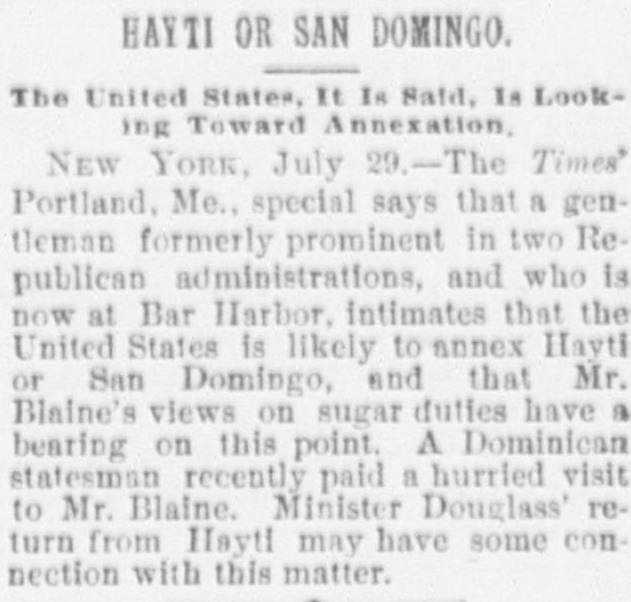
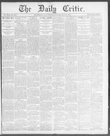

See the full pageVer la página completaThe TYmtV Portland, Me., speclsl says that a gen tleman formerlyEl especial del Times desde Portland, Maine, dice que un caballero antes
A Portland special to the Times reported that a gentleman formerly prominent in two Republican administrations, now at Bar Harbor, intimated that the United States is likely to annex Haiti or San Domingo, and that Mr. Blaines views on sugar duties have a bearing on the point. A Dominican statesman had recently paid a hurried visit to Mr. Blaine, and Minister Douglass return from Haiti may have some connection with the matter.Un despacho de Portland para el Times informó de que un caballero antes prominente en dos administraciones republicanas, ahora en Bar Harbor, insinuó que es probable que Estados Unidos se anexe Haití o Santo Domingo, y que las opiniones del Sr. Blaine sobre los derechos del azúcar tienen relación con el asunto. Un estadista dominicano había hecho recientemente una visita apresurada al Sr. Blaine, y el regreso del ministro Douglas de Haití podría tener alguna conexión con el tema.
FULL TEXT:TRADUCCIÓN:
HAYTI OR SAN DOMINGO.HAITÍ O SANTO DOMINGO.
The United States, It Is Said, Is Looking Toward Annexation.Los Estados Unidos, se dice, están mirando hacia la anexión.
NEW YORK, July 29.—The Times' Portland, Me., special says that a gentleman formerly prominent in two Republican administrations, and who is now at Bar Harbor, intimates that the United States is likely to annex Hayti or San Domingo, and that Mr. Blaine's views on sugar duties have a bearing on this point. A Dominican statesman recently paid a hurried visit to Mr. Blaine. Minister Douglass' return from Hayti may have some connection with this matter.NUEVA YORK, 29 de julio.—El despacho especial del Times desde Portland, Maine, dice que un caballero antes prominente en dos administraciones republicanas, y que está ahora en Bar Harbor, insinúa que es probable que los Estados Unidos anexen Haití o Santo Domingo, y que las opiniones del Sr. Blaine sobre los derechos del azúcar tienen relación con este punto. Un estadista dominicano recientemente hizo una visita apresurada al Sr. Blaine. El regreso del Ministro Douglass desde Haití puede tener alguna conexión con este asunto.
The Daily Critic. Washington City, D.C., July 29, 1890.
See the original at the Library of CongressVer el original en la Biblioteca del Congreso
Published by: Washington Critic Co., 1890.Publicado por: Washington Critic Co., 1890.
Edition: Edition 1Edición: edición 1
Page: 1Página: 1
Frequency: daily (1890–1890)Frecuencia: diario (1890–1890)
Collection: Chronicling America, Library of CongressColección: Chronicling America, de la Biblioteca del Congreso
LCCN: sn2008058170LCCN: sn2008058170
ISSN: 2157-3093ISSN: 2157-3093
OCLC: 232334430OCLC: 232334430
Rights: public domain, according to the Library of CongressDerechos: dominio público, según la Biblioteca del Congreso